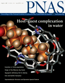

News Archives : 2005 : Who Calls the Shots When the Synapse Forms?
by Joshua Sanes
October 6, 2005
The synapse is the heart of the nervous system, the site at which information is processed and passed between cells. Its formation involves signals passed between the pre- and postsynaptic partners. Using the neuromuscular junction (NMJ), whose large size and accessibility has made it a favorite preparation for studies of synaptic development, two recent papers from the Sanes lab shed new light on how these cells collaborate (Flanagan-Steet, Fox, Meyer, Sanes, "Neuromuscular synapses can form in vivo by incorporation of initially aneural postsynaptic specializations." Development, October 15, 2005; and Misgeld, Kummer, Lichtman, Sanes, "Agrin promotes synaptic differentiation by counteracting an inhibitory effect of neurotransmitter." Proceedings of the National Academy of Sciences, August 2, 2005).
One popular model of signal reception, or postsynaptic differentiation, has been that a protein called agrin, secreted by the motor axon, induces the clustering of acetylcholine receptors (AChRs). In support of this theory, Sanes and colleagues previously showed that agrin knock-out mice display lethal defects in postsynaptic differentiation. On the other hand, they and others later found, using other genetically engineered mice, that AChR clusters did appear in muscles that had failed to become innervated by motor axons. This result suggested that aneural receptor clusters might not be induced, but instead recognized by axons and incorporated into synapses, and that agrin might be playing a role in stabilization rather than formation of the synapse.
To test this idea, in vivo imaging was required. Such imaging is infeasible in mice, so Flanagan-Steet et al. turned to zebrafish, which are transparent. Indeed, they found that AChR clusters formed before axons exited from the spinal cord and, on some fibers (called pioneer cells), were subsequently incorporated into NMJs as axons advanced. In contrast, aneural clusters on other fibers dispersed, then new receptor clusters were formed after axonal contact. This suggested a complex picture: that some synapses form by the previously proposed scheme and others by a novel mechanism. Regardless of whether receptor clusters formed aneurally or after axon-myotome contact, however, axons were required for the subsequent remodeling and selective stabilization of synaptic clusters that precisely appose post- to presynaptic elements.
Could agrin be the stabilizing influence? To test this idea, Misgeld et al. returned to mice. They generated double mutants lacking both agrin and the neurotransmitter, acetylcholine. Surprisingly, defects resulting from lack of agrin were largely absent when neurotransmission was also prevented. This result implied that a primary function of agrin is to counteract an unexpected local dispersal effect of neurotransmission. Several follow-up experiments in culture supported this idea. For example, application of the cholinergic agonist dispersed receptor clusters formed on cultured muscle cells but this dispersal was blocked at sites of contact with cells that expressed agrin.
These data are fully consistent with previous reports, but lead to the reinterpretation that agrin acts as an "anti-declustering" factor rather than (or perhaps in addition to) its expected role as a clustering factor. They also reveal a new and unexpected effect of neurotransmission in modifying the shape of the postsynaptic site. As has so often been the case for studies of the neuromuscular junction, it seems likely that these results will now be used by investigators who study the more interesting but less accessible synapse of the brain.
|  PNAS paper authors Thomas Misgeld, Terrance Kummer and Jeff Lichtman. (Josh Sanes pictured in top photo) |